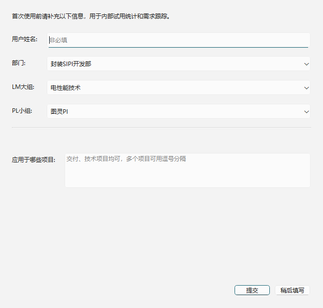
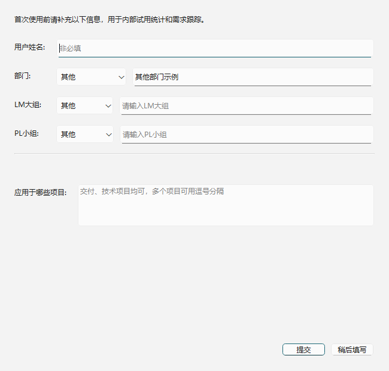
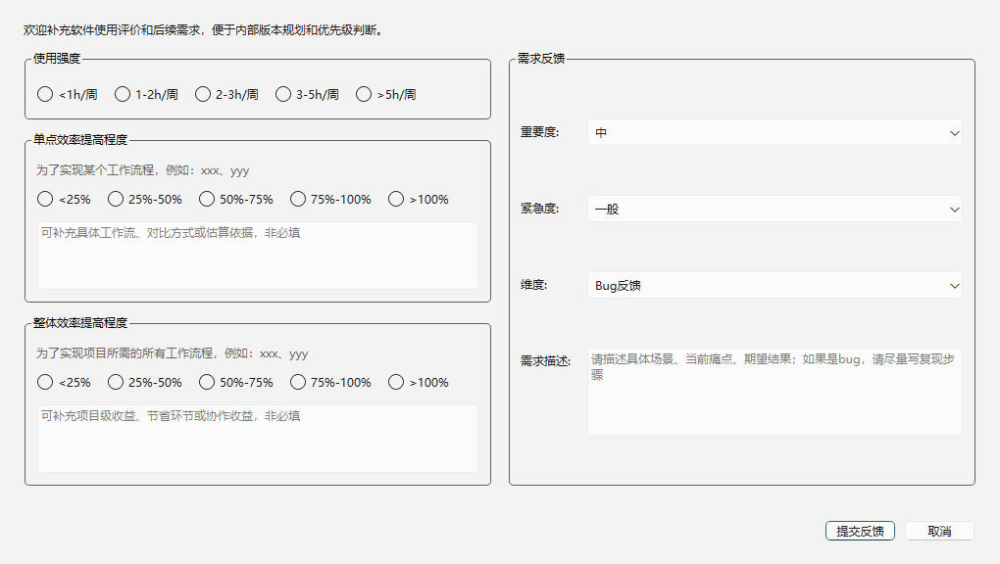

信息收集模块使用说明
这个模块只包含用户资料登记、启动/关闭使用记录、评价反馈、JSON 记录汇总到 Excel。 不包含试用过期关闭和版本更新提醒。
界面预览



模块功能
- 首次运行登记用户资料，并在本地保存
Public/usage_profile.json，避免重复弹窗。 - 每次启动和关闭记录主机名、启动时间、关闭时间。
- 用户可主动提交评价&反馈。
- 运行时只写独立 JSON 小文件，避免多人直接写同一个 Excel 造成文件锁。
- 开发者定时汇总 inbox，生成用户资料、使用记录、反馈三类 Excel 总表。
接入代码
把 runtime_services 文件夹放到工程入口脚本同级，然后在主窗口中接入：
from PyQt6.QtWidgets import QPushButton, QWidget
from runtime_services.feedback_collection import UsageTracker, show_feedback_dialog
class MainWindow(QWidget):
def __init__(self):
super().__init__()
self.usage_tracker = UsageTracker()
self.feedback_button = QPushButton("评价&反馈")
self.feedback_button.clicked.connect(self.open_feedback_dialog)
def prompt_usage_profile(self):
self.usage_tracker.ensure_profile(parent=self)
def open_feedback_dialog(self):
show_feedback_dialog(self)
def closeEvent(self, event):
self.usage_tracker.write_usage_log()
super().closeEvent(event)建议主界面显示后再弹首次用户资料问卷：
from PyQt6.QtCore import QTimer
window = MainWindow()
window.show()
QTimer.singleShot(300, window.prompt_usage_profile)需要修改的配置
| 文件 | 修改内容 |
|---|---|
collection_config.py |
软件名、版本号、用户资料问卷文案、部门/大组/小组选项、评价反馈选项、默认值、表头字段。 |
path_config.py |
本地 Public 路径、开发者共享 inbox 路径、三个 summary Excel 文件名和输出路径。
|
notice_manager.py |
共享路径不可访问时，在信息框里输出的统一提示文本。 |
正常改配置只需要看
collection_config.py 和 path_config.py。
其他文件是运行逻辑，除非要改交互或汇总规则，一般不用动。
数据写入位置
| 路径或文件 | 用途 |
|---|---|
Public/usage_profile.json |
本机用户资料缓存。 |
data_feedback/inbox/user_data_*.json |
用户资料提交记录。 |
data_feedback/inbox/usage_*.json |
启动/关闭时间记录。 |
data_feedback/inbox/feedback_*.json |
评价&反馈记录。 |
汇总命令
# 汇总开发者共享目录 inbox，一次性执行
python -m runtime_services.data_feedback_aggregator --target developer --once
# 每 10 分钟汇总一次
python -m runtime_services.data_feedback_aggregator --target developer --interval-seconds 600
# 本机调试只汇总 .\Public\data_feedback\inbox
python -m runtime_services.data_feedback_aggregator --target local --once汇总成功后会生成或续写：
Quick_Sparam_user_data_summary.xlsxQuick_Sparam_usage_summary.xlsx，包含“使用记录”和“主机累计统计”。Quick_Sparam_feedback_summary.xlsx
本地测试
python -m runtime_services.usage_tracker
python -m runtime_services.feedback_manager
python -m runtime_services.data_feedback_aggregator_smoke_test